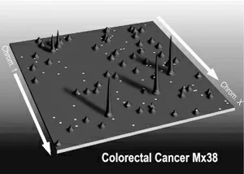

Returning from patients to the laboratory
In 2005, Mukherjee reaches a turning point in his oncology training. Some fellows will spend more of their careers treating patients; others will pursue laboratory research. He remembers patients who have died, attaching a short personal story to each name. This moment makes the question of cancer's cause deeply personal: the desire to understand a cell is never completely separate from the people harmed by it.
The search for a single cause
For centuries, investigators proposed different explanations: black bile, invading germs, injury, dietary influences, hereditary weakness, or uncontrolled cell growth. Was there a unitary cause beneath cancer's many forms? The theory that cancer is a genetic disorder eventually offers a unifying framework, but it took a long path to develop.
Boveri and disturbed chromosomes
Theodor Boveri studies cells and chromosomes, especially during the early divisions of embryos. He imagines that an abnormal combination of chromosomes could provoke uncontrolled cell division. His hypothesis is remarkably forward-looking, but the techniques of his era cannot decisively test it in human cancers.

Mendel, Morgan, and inherited information
Gregor Mendel demonstrates that biological traits pass through generations in discrete hereditary units. Later, Thomas Hunt Morgan uses fruit flies to investigate genes and chromosomes. These discoveries create the language needed to think about heredity and mutation. Yet connecting genetic rules in experimental organisms to human tumors remains extraordinarily difficult.
What researchers still cannot explain
Normal cells divide in regulated patterns; cancer cells do not. Why do the controls fail? A useful theory must account for cancers produced by varied exposures as well as cancers arising with no obvious external trigger. The chapter sets up the eventual connection between genes, mutations, and the molecular switches that regulate cell growth.
